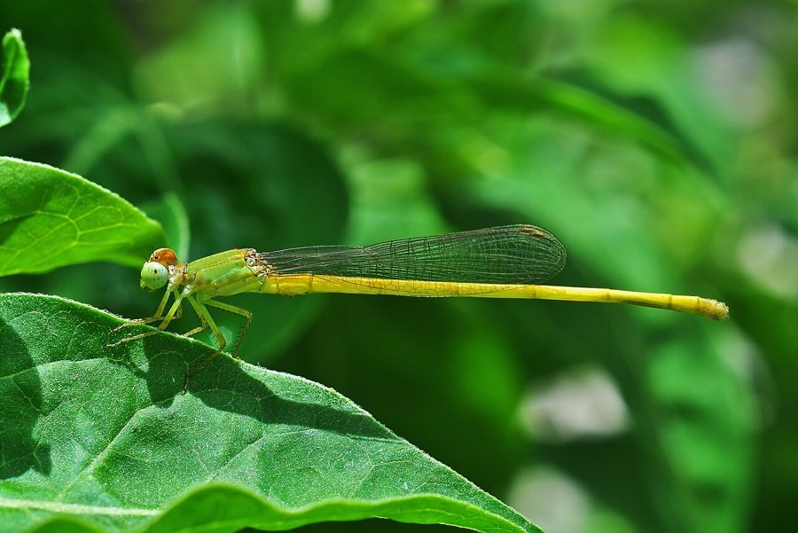

कोरोमंडल मार्श डार्टCoromandel Marsh Dart
Ceriagrion coromandelianum · Coenagrionidae · INS-0099

- Scientific nameवैज्ञानिक नाम
- Ceriagrion coromandelianum (Fabricius, 1798)
- Familyकुल
- Coenagrionidae
- Hindiहिंदी
- कोरोमंडल मार्श डार्ट
- Local namesस्थानीय नाम
- coromandel marsh dart, marsh dart, yellow damselfly, koromandal marsh dart
- Status hereयहाँ की स्थिति
- native
- Movementआवागमन
- Resident, here all year
- IUCNIUCN
- LC
- Reviewसमीक्षा
- audited and independently read
When to look कब देखें
Present all year.साल भर मौजूद।
Tell it apart from इनसे अलग पहचानें
कोरोमंडल मार्श डार्ट / Coromandel Marsh Dart
Ceriagrion coromandelianum (Fabricius, 1798) — Coenagrionidae
कोरोमंडल मार्श डार्ट — पूर्वी उत्तर प्रदेश के दलदली तालाबों, धान के खेतों और घास वाली नहरों में पाया जाने वाला एक छोटा, लाल रंग का तितलीनुमा कीट है जिसे हम नर निकटवर्ती प्रजाति (damselfly) कहते हैं। नर का पूरा शरीर गहरा लाल होता है जबकि मादा का रंग पीला या नारंगी होता है। यह कीट बहुत धीरे-धीरे उड़ती है और जलीय पौधों की पत्तियों पर बैठी रहती है। यह छोटे कीड़ों और मच्छरों को खाती है और पानी के पास के पौधों को परागकण पहुँचाने में मदद देती है।
Quick Identification त्वरित पहचान
| Feature | Description |
|---|---|
| Size | Small damselfly (body length 24–28 mm; wingspan 30–38 mm) |
| Male Colour | Bright, glossy red body throughout; underside also red |
| Female Colour | Bright yellow-orange or golden-yellow body; less glossy than male |
| Behaviour | Slow, fluttering flight; perches on vegetation; often in tandem pairs |
| Habitat | Marshy, heavily vegetated shallow water |
Field tip: Look for tiny red (male) or yellow-orange (female) damselflies flying slowly over marshy ponds and vegetation. The small size and bright colouration are distinctive. Males are often found in tandem with females, their long, slender bodies visible as they flutter near aquatic plants.
Morphology आकारिकी
Biometrics (typical measurements in northern Indian plains):
| Measurement | Range |
|---|---|
| Body length | 24–28 mm |
| Wingspan | 30–38 mm |
| Abdomen length | 18–21 mm |
Adult description: The male has a bright, glossy red body with red coloration on both dorsal and ventral surfaces, including the thorax, abdomen, and even the underside of the body. The wings are clear with black or dark red veins. The female is bright yellow-orange or golden-yellow, with yellow coloration throughout. Both sexes are extremely slender, with a small head relative to the long abdomen. The compound eyes are positioned laterally on the head.
Vocalisations
Odonates do not possess vocal organs and cannot produce true vocalisations.
Behaviour & Ecology व्यवहार और पारिस्थितिकी
The Coromandel Marsh Dart is a slow-flying damselfly that is well-adapted to life in heavily vegetated wetlands. Adults fly slowly and deliberately, often hovering near aquatic plants. They frequently form tandem pairs (male and female linked together), which is characteristic of damselflies and visible in the field. Males are weakly territorial. The species is highly dependent on dense emergent vegetation for shelter and hunting. It is a generalist with respect to water chemistry but requires the presence of aquatic plants.
Life Cycle / Phenology जीवन चक्र
| Stage / Season | Event |
|---|---|
| Egg | Inserted into submerged plant tissues; hatch in 7–10 days |
| Larva (Nymph) | Aquatic; 10–12 instars; development 4–6 weeks |
| Pupa | No pupal stage (hemimetabolous); nymphs crawl onto plants to emerge directly as adults |
| Adult emergence | Peak May–October; lifespan 3–4 weeks |
Host Plants or Prey आहार
Prey (adults):
- Small mosquitoes
- Midges
- Small flies
- Tiny gnats
Prey (nymphs):
- Mosquito larvae
- Chironomid larvae
- Small aquatic crustaceans
- Minute aquatic insects
Predators / Natural Enemies शत्रु
- Birds: Small warblers, flycatchers, and other insectivores.
- Fish: Dragonfly nymphs and larger aquatic insects prey on damselfly nymphs.
- Spiders: Web-building spiders.
Agricultural / Human Relevance कृषि प्रासंगिकता
Mosquito control. The Coromandel Marsh Dart is an important natural control agent for mosquitoes and other small flying insects, helping to suppress vector populations in rice-growing areas. The presence of this species indicates healthy wetland vegetation and acceptable water quality.
Expected Locally स्थानीय रूप से अपेक्षित
Not a field record. Written from published accounts for eastern Uttar Pradesh. No confirmed local sighting yet — if you have seen it, that is what the atlas needs.
अभी तक स्थानीय पुष्टि नहीं। यह विवरण प्रकाशित स्रोतों से है, किसी अवलोकन से नहीं।
To be expected throughout Basti district in marshy ponds, rice paddies, and canals with dense emergent vegetation such as reeds and water grasses. Look for tiny red (male) or yellow-orange (female) damselflies flying slowly and fluttering over aquatic plants. Males and females are often found together in tandem pairs. Active year-round, most abundant during monsoon and post-monsoon months (July–November). The first local record would be a photograph with place and date; send it to the atlas contact on the About page.
Distribution वितरण
Global range: Widespread across South Asia and extending into Southeast Asia, particularly in marshy lowlands and wetland regions.
In India: Distributed throughout the peninsula and the Gangetic plain, particularly in wet regions.
In Uttar Pradesh: Abundant in all districts with suitable wetland habitat.
In Basti district / eastern UP: Expected in all marshy areas and rice-growing regions.
Research Questions शोध प्रश्न
Anyone can investigate these | कोई भी इन प्रश्नों की जाँच कर सकता है
- What aquatic plant species do Coromandel Marsh Darts prefer for laying eggs? / कोरोमंडल मार्श डार्ट अंडे देने के लिए कौन से जलीय पौधे पसंद करती है? — Survey egg-laden females on different plant species.
- How many tandem pairs form on a given morning, and what proportion lead to successful egg-laying? — Observe and track pairs throughout the day.
- What is the nymphal survival rate in rice paddies treated with pesticides versus organic paddies? — Collect nymphs and track development.
- Do males show preference for specific microhabitats within a marsh? — Map male distribution patterns.
- How does emergent vegetation density affect damselfly abundance? — Compare abundance in dense versus sparse vegetation.
Similar Species मिलती-जुलती प्रजातियाँ
| Species | How to tell apart | हिंदी |
|---|---|---|
| Large Red Damselfly (Pyrrhosoma nymphula) | Larger; northern temperate species; more robust | बड़ी लाल तितलीनुमा कीट |
| Blue Dasher (Pachydiplax longipennis) | Dragonfly, not damselfly; larger; blue coloration | नीली डैशर |
Field rule: Tiny damselfly with bright red (male) or bright yellow-orange (female) body, slow fluttering flight over marshy vegetation, often in tandem pairs, is the Coromandel Marsh Dart.
Taxonomy & Classification वर्गीकरण
Original description. Johann Friedrich Wilhelm Fabricius described the Coromandel Marsh Dart as Agrion coromandelianum in 1798 in his work Supplementum entomologiae systematicae (p. 63). The type locality is India (Coromandel region). The genus Ceriagrion was established by Selys in 1862. The species name coromandelianum refers to the Coromandel Coast of India.
Subspecies. Monotypic or with limited subspeciation; C. c. coromandelianum is the widespread nominate subspecies throughout India and UP.
Family and order placement. Order Odonata, family Coenagrionidae (pond damsels).
Phylogenetic notes. Ceriagrion is a genus of small Asian damselflies with tropical affinities, and C. coromandelianum is among the most widespread species of the genus.
IUCN status rationale. Listed as Least Concern (LC). Common and widespread across wetlands of Asia with stable populations.
Photo Gallery फोटो गैलरी
No photos yet — add field photos to media/species/coromandel_marsh_dart/ and run node scripts/sync_photos.js.
Photos needed आवश्यक फोटो
- [ ] Adult male on plant (पौधे पर नर)
- [ ] Adult female (मादा)
- [ ] Tandem pair (जोड़ा)
References संदर्भ
- Fabricius, J.C. (1798). Supplementum entomologiae systematicae. Hafniae et Kiloniae, p. 63. [original description]
- Fraser, F.C. (1933). The Fauna of British India, including Ceylon and Burma. Odonata. Vol. 1. Taylor and Francis, London.
- Subramanian, K.A. (2009). An Annotated Checklist of the Odonata (Insecta) of India. Occas. Publ. Zoo. Surv. India, Kolkata, Vol. 302, pp. 1–32.
- Mitra, T.R. (2002). Geographical distribution of Odonata (Insecta) of Eastern India. Zoological Survey of India, Kolkata.
- IUCN SSC Odonata Specialist Group. (2024). Ceriagrion coromandelianum. IUCN Red List of Threatened Species. Ver. 2024.
- GBIF Occurrence Data — Ceriagrion coromandelianum, Uttar Pradesh (2010–2025).
Source file: species/fauna/insects/coromandel_marsh_dart.md